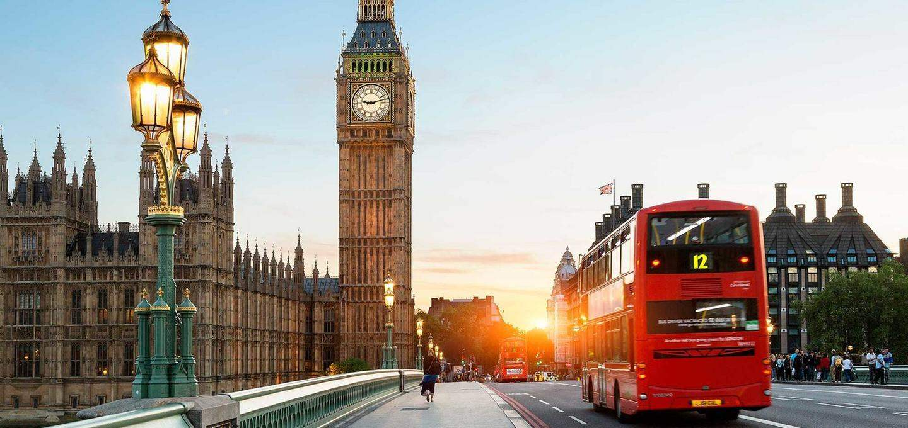

My Responsive Webpage
Khazimla Mahomana
London

The one city that I would like to visit is London.There is never a lack of attraction or interest in London as a travel destination. The royal plot is the major reason why I want to visit London, I have always wanted to visit Buckingham Palace to learn about the British monarchy. Popular attractions such as the Tower of London, Westminster Abbey and St. Paul's Cathedral are the main reasons why I want to visit London. What makes visiting London so interesting is the easy way to get from one place to another without a car, I find that so amusing because where I come from this is not possible. What I like is that London has so many attractions so while in London enjoying the city you can still continue traveling in London and easily visit famous landmarks such as Tower Bridge and The Shard's Skydeck in one day.
Foreign Language
Arabic is the foriegn language that I am interested in learning because Arabic was chosen by Allah, and the Islamic scriptures are written entirely in Arabic therefore I struggle a lot when reading the Arabic Quran because I do not understand anything hence why I see the need for me to learn the language. Infact it is important for all Muslims to learn to read and speak Arabic in order to be able to understand and interpret Allah's words by reading prayer and Quran
| ENGLISH | ARABIC |
|---|---|
| Hey, how are you doing? | Marhaban kayf haluk alyawm? |
| My day was was fantastic. | Kan yawmay rayiean. |
| I need new music. | Ahtaj musiqaa jadidatan. |
Historical Places
Castle of Good Hope
Three interesting facts about the Castle of Good Hope. It was built between 1666 and 1679, the Castle is known as the oldest surviving building in South Africa and has been the centre of civilian, political and military life at the Cape from approximately 1679. The five bastions of the Castle Leerdam, Buuren, Katzenellenbogen, Nassau, and Oranje were named after the main titles of Philip William, the Dutch Prince of Orange.
District Six
Three interesting facts about Iziko Museum The District Six Museum Foundation was not established until 1989, and the museum itself was established in 1994. The museum serves as a remembrance of the once lively multi-racial area that was forcefully removed during apartheid in the 1960s and 1970s. Over 60,000 of its inhabitants were forcibly removed during the 1970s by the apartheid regime.
Iziko Museum
Three interesting facts about Iziko The museum was founded in 1825, the first in the country. Iziko Museum has been on its present site in the Company's Garden since 1897. The museum houses or keeps important African zoology, palaeontology and archaeology collections.